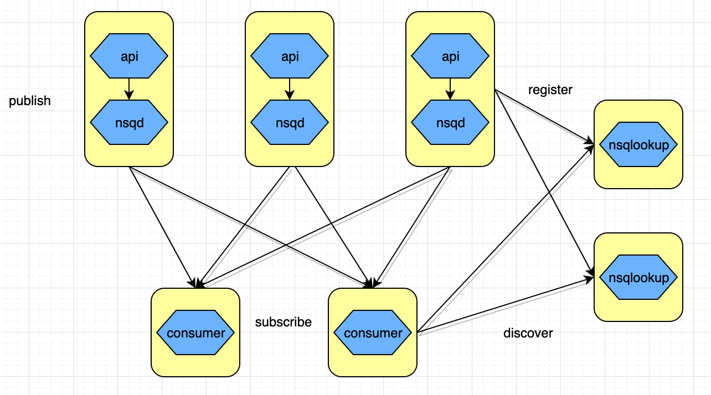
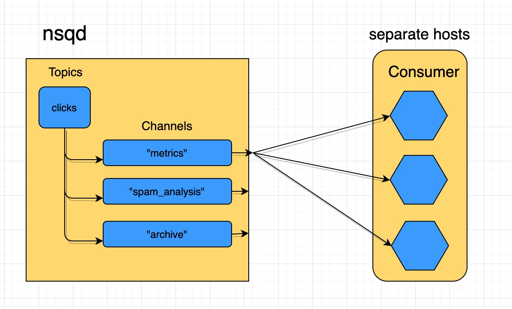

基本架构
整体架构图如下

nsqd
负责接收消息,存储队列,将消息发送给客户端
这个服务提供了 创建topic功能,并能生成一组 channel交互数据
具体过程如下
一条消息发送至topic,将会发送到该topic下所有的channel, 发送给某个消费者进行消费

topic
也就是对消息的分区,不同的频道
channel
消息队列
nsqlookup
一组类似zookeeper的功能
负责服务发现,nsqd当当心跳,状态监测,给客户端,nsqadmin提供nsqd的地址和状态
nsqadmin
一个webui用于查看nsq消息队列的基本信息
部署并启动
这里我们使用docker-compose 部署一个nsq集群, 架构如下
单个 nsqd 可以有多个 Topic，每个 Topic 又可以有多个 Channel。Channel 能够接收 Topic 所有消息的副本，从而实现了消息多播分发；而 Channel 上的每个消息被分发给它的订阅者，从而实现负载均衡，所有这些就组成了一个可以表示各种简单和复杂拓扑结构的强大框架。